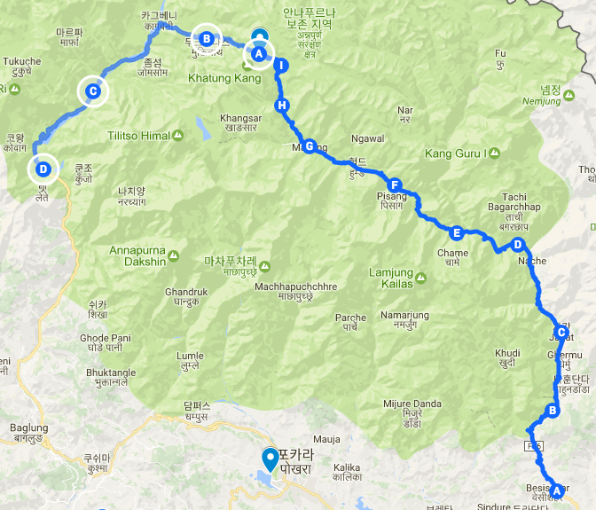
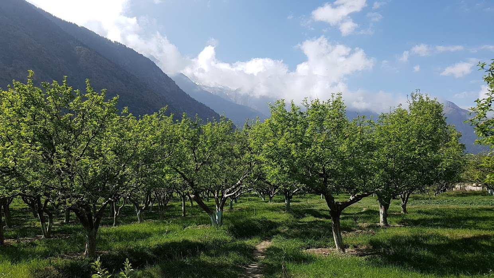
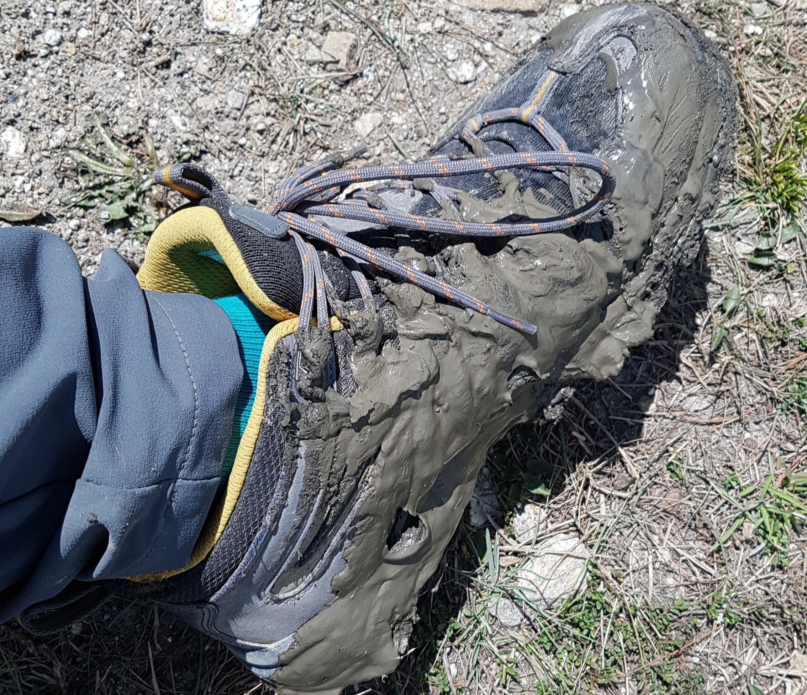
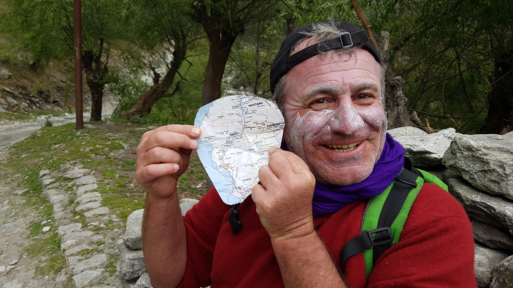

산이 허락한 길 이외에는 가지말것
2017년 04월 23일
여행 D+20, 안나푸르나 D+12
오늘 이동한 경로 (C) -> (D) (총 17km)
Marpha(2670) -> Kalopani(2525)

아침식사로 치킨을 시켰다. 지난번 야크 스테이크에 이어 또한번의 헤비 아침식사다. 역시나 주인아주머니가 의아해 하신다. 아침식사로 치킨을 먹으면 안된다는 과학적 근거라도 있나?? 아침식사의 정형화된 관습. 특히 서구 사회가 만들어놓은 고정관념이 전세계에 퍼져있다.
보고싶은것, 관심있는것만 보인다. 이곳 마르파 마을 지붕은 특이하게 나무들로 쌓여있다. 내가 만약 이런것에 관심이 있었다면 바로 알아챘을 것이다. 그리고 흥미있게 관찰했을것이다. 그런지만 나는 건축물과 도시에 별로 관심이 없었기 때문에 지나쳐버렸다. 관심사는 나이를 먹을 수록 달라질 것이다. 그래서 같은 여행지를 다음에 다시 방문해도 새롭게 느낄 수 있는것 같다. 같은 장소라도 자신의 관점과 관심사가 변화함에 따라 계속 다르게 느낄것이다.
마르파를 떠나 출발하는데 뒤에서 누가 불렀다. 버스안에서 미국놈 잭이 인사한다. 트래킹 구간중 자주 만났던 애다. 나이는 20살정도이고 고등학교를 졸업하고 곧 대학에 진학한다. 이제 트레킹을 종료하고 포카라로 돌아가는 길이라고 한다. 이렇게 멀리서 알아봐주고 인사해주니 반갑고 고맙다. 이곳에서 만난 사람들의 친절은 나중에도 잊지 못할 것같다.
느린길을 선택하라
가다가 길을 보니 거꾸로 가고 있는것 같았다. 그래서 노점상 아주머니께 물었더니 다행이 옳은 길로 가고 있었다. 다음 진입로는 두갈래로 나뉘어 있었다. 오른쪽은 차가 다니는 도로 왼쪽길은 차가 없는도로, 아주머니는 왼쪽길은 long way라고 하셨다. 보통 트레커들은 오른쪽 길을 선택하나보다. 하지만 나는 왼쪽 길을 선택하기로 했다. 숲길을 가고 싶어서다.

그선택이 옳았음이 곧 밝혀졌다. 차도없고 아름다운 자연과 마을을 마음껏 감상하며 걸었다. 게다가 길도 평지다.
목적지 빠른도착이 중요하면 오른쪽 차길을 선택하면 된다. 더 즐기고 싶으면 왼쪽 느린길을 선택 하면 된다. 이곳 안나푸르나에서는 어떤 선택도 옳고 틀리지 않다. 누구나 자신의 상황에 맞게 선호에 따라 가는 방법을 선택하면 된다. 그저 이 산이 허락하는 길만 따르면 된다. 어떤 방법을 사용해도 갈수있는 길만 있다면 그것은 산이 허락한 방법 인것이다.
하지만 나는 느린길을 선호한다. 때로는 가시에 찔리기도 하고, 길을 잘못 들게 되기도 한다. 더 거친길을 가게 되어 힘들수도 있다. 하지만 그 길은 그것들을 다 보상하고도 남을만한 가치가 있는 길이다. 파란나비가 내 앞에 날아 다니기도 하고 나무 와 잎 사이로 불어오는 사원한 바람을 느낄 수도 있다. 즐거운 새소리와 시냇물 소리를 들을 수 있고, 나뭇잎 틈을 통과해 바닥에서 춤을 추는 햇살을 감상 할 수도 있다.
오늘 선택한 이 느린길은 지금까지 트래킹 구간 중에서 최고 중 하나였다. 
산이 허락한 길 이외에는 가지말것
그때 까지는 최고의 길이었다. chimrang 을 지나서 sauru로 가는 길로 가려고 했었다. 이 길도 마찬가지로 차가 다니는 도로가 아니었기 때문이다. 숲길이었다. 그러다가 길을 잘못들었다. 맵스미에 있는 트레킹 코스를 지나쳐서 가게 되었다. 어차피 방향만 맞으면 어떤 길이든 갈 수 있겠지 않겠냐고 생각하고 강을 따라 가기로 했다. 몬순기간이 아니기 때문에 강도 거의 말라있고 걸어갈수 있을것 같았기 때문이다.
강한 바람을 뚫고 강길을 따라 계속 걸었다. 곳곳에 계곡물이 가로막고 있는 길이 있어서 통과하기가 어려웠다. 이곳저곳을 시도해보다가 결국 늪지대에 빠질뻔했다. 발한짝을 넣었는데 쑥 들어가버렸다. 바로 뒤로 돌아 탈출했다. 큰일날뻔함. 강을 따라가기는 힘들어보였다.

그래서 다른길로 시도한것이 아래 사진에 희미하게 보이는 절벽 코스다. 인간의 발자국이 희미하게 보이기 때문에 갈수 있을것 같았다. 숲속으로 들어갔다. 사람이 지나다닌 흔적이 있어서 다행이었다. 상당히 어려운 길이었다. 바로 오른쪽은 낭떠러지 였기 때문이다. 계속 진행하는데 길이 점점 어려워졌다. 길이 점점 희미해졌다. 그래도 계속 진행했다. 내가 염소도 아니고 아런 가파른 절벽을 가야한다는게 어이없었다. 발한번 잘못 디디면 나는 끝이다. 여간 사람도 안와서 여기서 죽는거다. 정말 살떨리는 마음으로 앞으로 잔행했다. 그러가다 길이 더이상 안보이는 지점에 이르게 되었다. 난감했다. 여기서 계속 가다가는 조난당할것 같았다. 영화 인투더 와일드가 생각났다. 과한 모험을 하다가 결국 어떤 장소에 갖혀서 죽은 사람의 실화 이야기를 그린 영화다.
이곳에서 더 가다간 죽을것 같았다. 고민끝에 처음 들어왔던 곳으로 돌아가기로 결정했다. 그러나 돌아가는 길도 만만치가 않았다. 한참을 들어왔기때문에 뒤로 돌아가는것도 쉽지가 않았다. 도데체 왜 이런짓을 한거냐며 자책했다. 너무 많은 시간을 날려버렸다. 그러나 한편으로 다시 돌아가기로 하길 100번 잘했다고 생각했다. 우여곡절 끝에 다시 시작지점으로 돌아왔다. 약 1시간 반을 날린것같았지만 살아서 무사히 땅에 발을 디딘것 만으로도 감사했다. 나는 이제 숲길로 가지않고 차가 다니는 길로 가기로 했다.
내가 교만했었다. 인간은 산이 허락한 몇개의 루트만 진입할 수 있을 뿐이다. 나는 오만하게도 내 스스로 길을 개척해서 가려고 했었다. 그것은 일개 트레커인 내가 감히 할 수 있는일이 아니다. 거대한 산 중에 작은 길 만이 인간에게 허락된 길이다. 오늘 깨달았다. 절대 산이 허락한 길 이외의 길은 가지 말것.
그뒤 툭체에서 점심을 먹고 걷고 또 계속 걸었다. 완전 황량한 사막을 계속 걸었다. 정말 한명도 없었다. 엄청난 크기의 공간에 나밖에 없는데, 이것이야말로 절대 고독이라는 생각이 들었다. 어제와는 다르게 외로움도 느껴졌다. 이 공간을 나혼자 즐기고 았다는 사실에 기분이 묘하기도 했다. 오늘은 버스나 히치하이킹을 할 생각이 없었기 때문에 최대한 걸어보기로 했다. 목적지는 칼로파니가 될것 같았다.
가는 길에 어제 만났던 우크라이나 애들을 만나서 인사했다. 타토파니로가는 버스를 기다린다고 한다. lajung에 도착했는데 다왈라기니가 떡하니 등장했다. 엄청나게 웅장하다. 오늘 정말 고생을 많이하고 많이 걷기도 했지만 이런 광경때매 계속 걷게 되는것 같다. 오늘의 최고로 멋진 경치였다.
계속 걷다가 자전거를 타고 가는 트레커 두명을 만났다. 길을 가다 계속 만나서 인사했다. 나보고 엄청 빠르다고 해줘서 그동안 떨어져있던 자존감이 살아났다. 한번은 강을 건너려고 했는데 그친구들은 자전거로도 못가는 것을 나는 걸어서 가로질러 지나갔더니 엄지척을 해줬다. 훗 녀석들.
kokhethanti 에 도착해서 잠시 같이 쉬었다. 어떤 프랑스 아저씨도 같이 와서 만났다. 무척 신기한 아저씨였다. 그뒤 다시 칼로파니로 출발할때 같이 동행하게 되었다. 네팔리 청년이랑 같이 가길래 네팔리 청년이 포터인줄 알았는데 아니었다. 이 아저씨가 그 네팔친구를 가이드해주고 있었다. 아 청년 아버지와 이 프랑스인 아저씨가 친구라고 함. 그리고 이 아저씨는 네팔에서 16년을 살고있다고 한다. 네팔에서 생활비가 저렴하기 때문에 살수 있다고한다. 고향에서는 절대 못사는데 말이다. 파리에 렌트를하는 집이있어서 그 수익으로 네팔에서 생활한다고 한다. 프랑스인 답게 특유의 말많음과 유머가 있었다. 계속 같이 걸으면서 이런저런 대화를 하며 재미있게 시간을 보냈다. 이 아저씨는 핸드폰도 없고 정말 후리하게 다녔다. 자유인같았다. 주머니에 주섬주섬 꺼낸 지도도 정말 웃겼다. 진짜 대충대충 간지나게 사는것 같았다. 결국 같이 칼로파니에 도착했고 같은 숙소에 묶었다.
 정말 대충대충 즐겁게 사는 양반이었다. 지도도 딱 필요한 부분만 저렇게 오려서 다니는데 겁나 웃겼다
칼로파니 마을이 내가 본마을 중 제일 예쁜것같았다. 조용하고 주변 자연도 아름다웠다.칼로파니에 거의 다다라서 본 숲과 구름의 경계가 특히 아름다웠다. 프랑스 아저씨가 칼로파니의 뜻은 검은물 이라고 알려주셨다. 정말 물 색이 검은색이었다. 신기